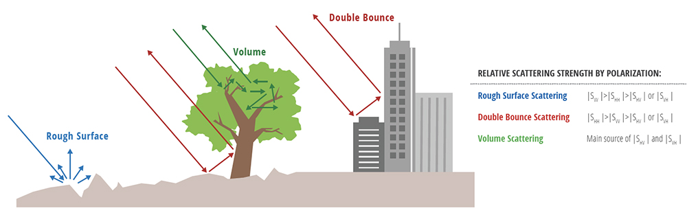
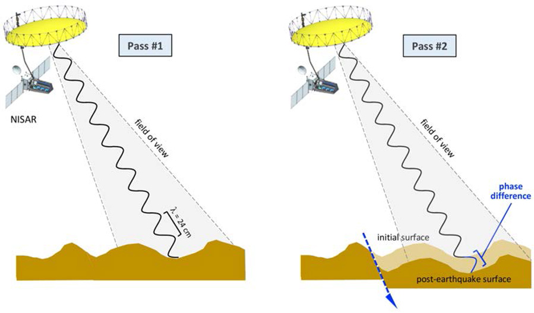

8 Synthetic Aperture Radar (SAR)
8.1 Summary
Synthetic Aperture Radar in active sensor that can ‘see’ through the atmosphere including clouds and gives our surface texture data. It emits an electromagnetic signal and records the amount of signal that bounces back.
It is able to capture a large area while moving by imaging pixels in swath multiple times (sweeping and moving), the collection of which will be combined to make ‘synthetic aperture’. Different wavelengths are used for different applications because it can affect scattering (3cm - 65 cm)

SAR signal contains two types of data: Amplitude and Phase
For Amplitude, besides the ‘strength’ and the wavelength of the backscatter it receives, polarisation is taken into accounts, that is, the orientation of the plane of transmission and that of reception. It could be single (Horizontal or Vertical only), Dual, Mixed (HV, VH). Different surfaces respond differently to the polarizations:
Rough scattering (e.g. bare earth) is most sensitive to VV
Volume scattering (e.g. leaves) is most sensitive to mixed, VH or HV
Double bounce (e.g. trees / buildings) is most sensitive to HH.

- For phase, it records the location of wave on the cycle when the comes back to the sensor to determine elevation. Manipulating phase data using InSAR, essentially combines more SAR images over the same region, can reveal topography or motion (the filed is called interferometry). If phase shift comes from topography, and we would like to remove the effect of this, we are looking at DInSAR (the field is called differential inteferometry).

Lastly, SAR data products also come in different flavours. Raw data from Sentinel-1 is povided on a power scale, not suitable for visualisation (too bright, too dark). An amplitude scale (square root of the power scale) allows better visualisation. On the other hand, SAR data provided in GEE is on Decibel scale, making it good for identifying differences in dark pixels but not great for visualisation or statistical analysis.
8.2 Application
SAR is a powerful type of sensor. Unlike optical sensors, SAR can operate day and night and can penetrate clouds, making it a reliable data source regardless of weather conditions. SAR backscatter is also sensitive to the shapes and materials of urban objects, allowing for detailed characterization of buildings and infrastructure. Finally, SAR data can be integrated with other types of remote sensing data, such as optical imagery, to provide a more comprehensive picture of the urban environment. Issues remain, however, pertaining to its relative complexity in interpretation and likelihood of noise but in many applications, the benefits outweigh the setbacks.
SAR offers valuable capabilities for urban analytics such as:
- Urban Mapping and Change Detection: SAR data can be used to create detailed maps of urban areas, including buildings, roads, and other infrastructure. By comparing SAR images from different time periods, researchers can track urban growth and sprawl. In a study by Li et al. (2019), SAR for urban change detection used a mixed method combining subtraction and log-ratioing. Then, a Residual U-Net algorithm was trained to detect different extents of urban change, chosen over other image classification architectures for its ability to learn from complex, details-laden images of cities.

- Land Cover Classification: By analyzing the backscattered radar signal, SAR can classify different land cover types within an urban environment, such as vegetation, bare soil, impervious surfaces, and water. Although LULC classification can be done with optical imagery, as seen in previous entries, SAR imagery, especially with phase data, has the advantage of also detecting slight geological changes imperceptible to other sensors. However, there is no reason for them to be mutually exclusive. Shi et al. (2020) combined Sentinel-1 and Landsat-8 data to perform land cover classification in multiple Asian cities. The results showed superior accuracy compared to using just one of the sensors alone.
Many research works acknowledged and attempted to overcome SAR’s shortcomings speckle noise). Huang et al. (2023) introduced a new dual-polar radar vegetation index (DpRVIm) that considers scattering information and terrain factors. The results show that the new method achieves higher accuracy than traditional methods, especially for farmland and forest. This shows that analysts should not feel bogged down by any seeming limitations but instead have many options to mix and match RS data and classification methodology to accomplish a task.
8.3 Reflection
It was fascinating to learn about SAR beyond what I had learned about LiDAR in Week 2. Both are active sensors that use radio frequency emissions to remotely sense the environment. Active sensors are fascinating because they are (usually) specific to certain applications rather than optical imagery that is quite versatile and often free-access. Therefore, this could be a very active field with new technologies emerging as industry needs arise.
Examples of active sensors besides SAR and LiDAR are:
Laser and Radar Altimeter: measures altitude, which is the distance of an object above a fixed level, most commonly sea level.
Scatterometer: A specialized radar that uses high-frequency radio waves to estimate wind speed and direction over oceans.
Sounder: This device examines the atmosphere by analyzing reflected radio waves. It measures things like rain, temperature, humidity, and cloud types.
Worth noting is that many such active remote sensors can be terrestrial and even generated by hand-held devices instead of mounted in space, opening up a world of possibilities for vast, hyper-local remote sensing data sets. Zhang et al. (2019)